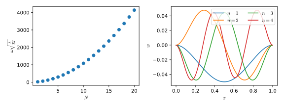

Reto de métodos numéricos: Día 22
Durante octubre (2017) estaré escribiendo un programa por día para algunos métodos numéricos famosos en Python y Julia. Esto está pensado como un ejercicio, no esperen que el código sea lo suficientemente bueno para usarse en la "vida real". Además, también debo mencionar que casi que no tengo experiencia con Julia, así que probablemente no escriba un Julia idiomático y se parezca más a Python.
Diferencias finitas: problemas de valores propios
Hoy tenemos el método de diferencias finitas para calcular los modos de vibración de una viga. La ecuación de interés es
con
A continuación se presenta el código.
Python
from __future__ import division, print_function import numpy as np from scipy.linalg import eigh as eigsh import matplotlib.pyplot as plt def beam_FDM_eigs(L, N): x = np.linspace(0, L, N) dx = x[1] - x[0] stiff = np.diag(6*np.ones(N - 2)) -\ np.diag(4*np.ones(N - 3), -1) - np.diag(4*np.ones(N - 3), 1) +\ np.diag(1*np.ones(N - 4), 2) + np.diag(1*np.ones(N - 4), -2) vals, vecs = eigsh(stiff/dx**4) return vals, vecs, x N = 1001 nvals = 20 nvecs = 4 vals, vecs, x = beam_FDM_eigs(1.0, N) #%% Plotting num = np.linspace(1, nvals, nvals) plt.rcParams["mathtext.fontset"] = "cm" plt.figure(figsize=(8, 3)) plt.subplot(1, 2, 1) plt.plot(num, np.sqrt(vals[0:nvals]), "o") plt.xlabel(r"$N$") plt.ylabel(r"$\omega\sqrt{\frac{\lambda}{EI}}$") plt.subplot(1, 2 ,2) for k in range(nvecs): vec = np.zeros(N) vec[1:-1] = vecs[:, k] plt.plot(x, vec, label=r'$n=%i$'%(k+1)) plt.xlabel(r"$x$") plt.ylabel(r"$w$") plt.legend(ncol=2, framealpha=0.8, loc=1) plt.tight_layout() plt.show()
Julia
using PyPlot function beam_FDM_eigs(L, N) x = linspace(0, L, N) dx = x[2] - x[1] stiff = diagm(6*ones(N - 2)) - diagm(4*ones(N - 3), -1) - diagm(4*ones(N - 3), 1) + diagm(1*ones(N - 4), 2) + diagm(1*ones(N - 4), -2) vals, vecs = eig(stiff/dx^4) return vals, vecs, x end N = 1001 nvals = 20 nvecs = 4 vals, vecs, x = beam_FDM_eigs(1.0, N) #%% Plotting num = 1:nvals # Missing line for setting the math font figure(figsize=(8, 3)) subplot(1, 2, 1) plot(num, sqrt.(vals[1:nvals]), "o") xlabel(L"$N$") ylabel(L"$\omega\sqrt{\frac{\lambda}{EI}}$") subplot(1, 2 ,2) for k in 1:nvecs vec = zeros(N) vec[2:end-1] = vecs[:, k] plot(x, vec, label="n=$(k)") end xlabel(L"$x$") ylabel(L"$w$") legend(ncol=2, framealpha=0.8, loc=1) tight_layout() show()
Ambos tienen (casi) el mismo resultado, presentado a continuación
Comparación Python/Julia
Respecto al número de líneas tenemos: 40 en Python y 39 en Julia. La comparación
en tiempo de ejecución se realizó con el comando mágico de IPython %timeit
y con @benchmark en Julia.
Para Python:
con resultado
Para Julia:
con resultado
BenchmarkTools.Trial: memory estimate: 99.42 MiB allocs estimate: 55 -------------- minimum time: 665.152 ms (17.14% GC) median time: 775.441 ms (21.76% GC) mean time: 853.401 ms (16.86% GC) maximum time: 1.236 s (15.68% GC) -------------- samples: 6 evals/sample: 1
En este caso, podemos decir que el código de Python es alrededor de 4 veces más rápido que el de Julia.